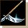
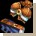
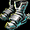
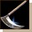
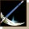

{kind=link}

（50分）
| ＜霊術士＞ | |
|---|---|
| ロハススタイル（Lv60） | |
| ゴッドファビッド（Lv130） | |
| オカルトクラブ（Lv270） | |
| 輪廻の輪（Lv330） | |
| 魂の墓（Lv425） | |
| 死への招待（Lv535） | |
| ゴースト・イレギュリアン（Lv580） | |
| 明王（Lv710） |
| セット名 | 部位 | 沸き場所/ボス名・沸き時間 | |||||
| ロハススタイル（Lv60） |  | |
オート地下監獄B3 | ||||
|  | |
オート警備隊長 （50分） |
|||||
| アイテム詳細 | セット効果 | |||||||||
| 部位 | 名前 | ステ要求 | OP1 | OP2 | OP3 | ベース | 2個 | 3個 | 4個 | 5個 |
| ダブルハンガー | 力 95 | 攻撃Lv6 ダメ＋60％ |
三日月 | 魔法抵抗 +10％ |
魔法抵抗 +15％ |
魔法抵抗 +20％ |
魔法抵抗 +25％ |
|||
| 籠スカート | − | 威厳Lv7 カリスマ＋20 |
レザースカート | 最大CP +100 |
最大CP +150 |
最大CP +150 |
||||
|
楓のネックレス | − | 達人 スキル＋1 |
首飾り | CPﾎﾞｰﾅｽ 8％ |
|||||
| 甘い誘惑 | 力 30 | 防効Lv6 防御＋60％ |
鉄の帽子 | |||||||
|
いが栗シューズ | 力 25 | 敏捷Lv7 敏捷＋20 |
鱗シューズ | ||||||
| セット名 | 部位 | 沸き場所/ボス名・沸き時間 | |||||
| ゴッドファビッド（Lv130） | スマグ地下道B3 | ||||||
| 重武装騎士 （60分） |
|||||||
| アイテム詳細 | セット効果 | |||||||||
| 部位 | 名前 | ステ要求 | OP1 | OP2 | OP3 | ベース | 2個 | 3個 | 4個 | 5個 |
| ナルシスの鏡 | 力 211 | 攻撃Lv5 ダメ＋40％ |
ダイヤモンドサイズ | 魔法抵抗 +10％ |
魔法抵抗 +15％ |
魔法抵抗 +20％ |
魔法抵抗 +25％ |
|||
| 新緑の仮面 | 力 90 | 防効Lv8 防御＋100％ |
ジャイアント兜 | 最大CP +150 |
最大CP +200 |
最大CP +200 |
||||
| ファイアーマウス | 力 65 | 攻速Lv1 攻速＋20％ |
ガントレット | 攻速 ＋15％ |
攻速 ＋30％ |
|||||
| ハリネズミシューズ | 力 35 | 敏捷Lv7 敏捷＋20 |
強化シューズ | CPﾎﾞｰﾅｽ 8％ |
||||||
| エンゲージリング | カリスマ 5 | CP効率Lv1 CP＋6％ |
威厳Lv2 カリスマ＋3 |
敏捷Lv2 敏捷＋3 |
スタンプリング | |||||
| セット名 | 部位 | 沸き場所/ボス名・沸き時間 | |||||
| オカルトクラブ（Lv270） | 過ぎた栄光の展示場 | ||||||
|  | 展示場の鎧 （5時間38分） |
||||||
| アイテム詳細 | セット効果 | |||||||||
| 部位 | 名前 | ステ要求 | OP1 | OP2 | OP3 | ベース | 2個 | 3個 | 4個 | 5個 |
| メタル・パーティクル | 力 211 | 攻撃Lv9 ダメ＋120％ |
ダイヤモンドサイズ | 魔法抵抗 +10％ |
魔法抵抗 +15％ |
魔法抵抗 +20％ |
魔法抵抗 +25％ |
|||
| ラノンのペンデュラム | 知恵 65 | 達人 スキル＋1 |
威厳Lv3 カリスマ＋5 |
ペンダント | 健康 +50 |
健康 +200 |
健康 +250 |
|||
| 黄金の冠 | カリスマ 75 | 威厳Lv6 カリスマ＋15 |
最大CPLv8 最大CP＋70 |
王冠 | 攻速 ＋15％ |
攻速 ＋30％ |
||||
| テトラフォビア | 力 120 | 最大CPLv11 最大CP＋200 |
チェーンメイル | CPﾎﾞｰﾅｽ 8％ |
||||||
| アルボナブーツ | 力 80 | 敏捷Lv7 敏捷＋20 |
移速Lv5 移速＋30％ |
メタルシューズ | ||||||
| セット名 | 部位 | 沸き場所/ボス名・沸き時間 | |||||
| 輪廻の輪（Lv330） |  | 名も無い崩れた塔B4 | |||||
| アンデッドキング （7時間38分） |
|||||||
| アイテム詳細 | セット効果 | |||||||||
| 部位 | 名前 | ステ要求 | OP1 | OP2 | OP3 | ベース | 2個 | 3個 | 4個 | 5個 |
| 地獄道 | 力 315 | 攻撃Lv10 ダメ＋150％ |
銅の鎌GDX | 魔法抵抗 +10％ |
魔法抵抗 +15％ |
魔法抵抗 +20％ |
魔法抵抗 +25％ |
|||
| 餓鬼道 | 知恵 365 | 名手 スキル＋2 |
威厳Lv3 カリスマ＋5 |
ペンダントXLS | 健康 +200 |
健康 +250 |
健康 +250 |
|||
| 畜生道 | 力 230 | 攻速Lv1 攻速＋20％ |
敏捷Lv6 敏捷＋15 |
ガントレットXLS | ダメージ +70％ |
ダメージ +140％ |
||||
| 阿修羅道 | 敏捷 132 | 威厳Lv8 カリスマ＋30 |
レザースカートDX | CPﾎﾞｰﾅｽ 8％ |
||||||
| 輪廻の証拠 | カリスマ 80 | CP効率Lv1 CP＋10％ |
威厳Lv3 カリスマ＋5 |
敏捷Lv3 敏捷＋5 |
スタンプリングLX | |||||
| セット名 | 部位 | 沸き場所/ボス名・沸き時間 | |||||
| 魂の墓（Lv425） |  | 暴かれた納骨堂B6 | |||||
| 納骨堂の主 （9時間38分） |
|||||||
| アイテム詳細 | セット効果 | |||||||||
| 部位 | 名前 | ステ要求 | OP1 | OP2 | OP3 | ベース | 2個 | 3個 | 4個 | 5個 |
| 強制執行 | 力 567 | 攻撃Lv10 ダメ＋150％ |
銀メッキの鎌GDX | 魔法抵抗 +10％ |
魔法抵抗 +15％ |
魔法抵抗 +20％ |
魔法抵抗 +25％ |
|||
| ガテラの補聴器 | カリスマ 230 | 威厳Lv8 カリスマ＋30 |
最大CPLv8 最大CP＋70 |
CP効率Lv1 CP＋10％ |
冕冠XLS | スキル +3 |
スキル +4 |
スキル +5 |
||
| 心の休息 | 力 230 | 攻速Lv2 攻速＋35％ |
敏捷Lv8 敏捷＋30 |
ガントレットXLS | ダメージ +80％ |
ダメージ +160％ |
ダメージ +160％ |
|||
| スケープ・インフェルノ | 力 368 | 最大CPLv11 最大CP＋200 |
最大CPLv9 最大CP＋100 |
チェーンメイルGDX | 命中率 +10％ |
命中率 +16％ |
||||
| 裏切りのラカトス | カリスマ 80 | CP効率Lv1 CP＋10％ |
威厳Lv3 カリスマ＋5 |
敏捷Lv3 敏捷＋5 |
スタンプリングLX | CPﾎﾞｰﾅｽ 8％ |
||||
| セット名 | 部位 | 沸き場所/ボス名・沸き時間 | |||||
| 死への招待（Lv535） | 呪いを受けたミズナの洞窟B2 | ||||||
| 戦慄のサソリ （10時間38分） |
|||||||
| アイテム詳細 | セット効果 | |||||||||
| 部位 | 名前 | ステ要求 | OP1 | OP2 | OP3 | ベース | 2個 | 3個 | 4個 | 5個 |
| テタヌス | 力 615 | 攻撃Lv10 ダメ＋150％ |
斬馬鎌LX | 魔法抵抗 +10％ |
魔法抵抗 +15％ |
魔法抵抗 +20％ |
魔法抵抗 +25％ |
|||
| ウイルスの心臓 | 知恵 365 | 大家 スキル＋3 |
威厳Lv7 カリスマ＋30 |
ペンダントXLS | 回避率 +10％ |
回避率 +16％ |
回避率 +16％ |
|||
| レジスタンスウイルス | 力 230 | 攻速Lv2 攻速＋35％ |
敏捷Lv8 敏捷＋30 |
CP効率Lv1 CP＋10％ |
ガントレットXLS | ダメージ +90％ |
ダメージ +180％ |
ダメージ +180％ |
||
| 濡れた履物 | 力 98 | 威厳Lv8 カリスマ＋30 |
移速Lv5 移速＋30％ |
HP効率Lv1 HP＋10％ |
クロスシューズDX | 命中率 +10％ |
命中率 +16％ |
|||
| Hワクチン | カリスマ 80 | CP効率Lv2 CP＋15％ |
威厳Lv3 カリスマ＋5 |
敏捷Lv3 敏捷＋5 |
スタンプリングLX | CPﾎﾞｰﾅｽ 8％ |
||||
| セット名 | 部位 | 沸き場所/ボス名・沸き時間 | |||||
| ゴースト・イレギュリアン（Lv580） | ゴールド・スワンプ洞窟B3 | ||||||
| 海の君主 （11時間45分） |
|||||||
| アイテム詳細 | セット効果 | |||||||||
| 部位 | 名前 | ステ要求 | OP1 | OP2 | OP3 | ベース | 2個 | 3個 | 4個 | 5個 |
| イレギュリアンの牙 | 力 615 | 攻撃Lv10 ダメ＋150％ |
攻撃Lv6 ダメ＋60％ |
斬馬鎌LX | 魔法抵抗 +10％ |
魔法抵抗 +15％ |
魔法抵抗 +20％ |
魔法抵抗 +25％ |
||
| イレギュリアンの角 | カリスマ 275 | 威厳Lv10 カリスマ＋100 |
最大CPLv9 最大CP＋100 |
CP効率Lv1 CP＋10％ |
王冠XLS | スキル +5 |
スキル +6 |
スキル +7 |
||
| イレギュリアンの爪 | 力 230 | 攻速Lv2 攻速＋35％ |
敏捷Lv8 敏捷＋30 |
CP効率Lv1 CP＋10％ |
ガントレットXLS | ダメージ +100％ |
ダメージ +200％ |
ダメージ +200％ |
||
| イレギュリアンの皮 | 力 464 | 最大CPLv11 最大CP＋200 |
最大CPLv9 最大CP＋100 |
CP効率Lv1 CP＋10％ |
コンポジットアーマーGDX | 命中率 +17％ |
命中率 +17％ |
|||
| イレギュリアンの足 | 力 293 | 敏捷Lv8 敏捷＋30 |
移速Lv5 移速＋30％ |
HP効率Lv3 HP＋25％ |
メタルシューズGDX | CPﾎﾞｰﾅｽ 8％ |
||||
| セット名 | 部位 | 沸き場所/ボス名・沸き時間 | |||||
| 明王（Lv710） | 時の森（最深部） | ||||||
| ハゲワシ勇者 （12時間50分） |
|||||||
| アイテム詳細 | セット効果 | |||||||||
| 部位 | 名前 | ステ要求 | OP1 | OP2 | OP3 | ベース | 2個 | 3個 | 4個 | 5個 |
| 死神 | 力 615 | 攻撃Lv10 ダメ＋150％ |
攻撃Lv10 ダメ＋150％ |
斬馬鎌LX | 魔法抵抗 +10％ |
魔法抵抗 +15％ |
魔法抵抗 +20％ |
魔法抵抗 +25％ |
||
| 新月の微笑み | 知恵 365 | RED STONE スキル＋5 |
威厳Lv8 カリスマ＋30 |
威厳比率Lv1 カリスマ1/12 |
ペンダントXLS | 回避率 +12％ |
回避率 +18％ |
回避率 +18％ |
||
| ヘルファイア | 力 230 | 攻速Lv2 攻速＋35％ |
敏捷Lv8 敏捷＋30 |
CP効率Lv1 CP＋10％ |
ガントレットXLS | ダメージ +110％ |
ダメージ +220％ |
ダメージ +220％ |
||
| 明王降臨 | 力 464 | 最大CPLv11 最大CP＋200 |
最大CPLv9 最大CP＋100 |
CP効率Lv2 CP＋10％ |
コンポジットアーマーGDX | 命中率 +12％ |
命中率 +18％ |
|||
| 冥王星の霊光 | 力 140 | CP効率Lv2 CP＋15％ |
威厳Lv3 カリスマ＋5 |
敏捷Lv3 敏捷＋5 |
リングLX | CPﾎﾞｰﾅｽ 8％ |
||||

{kind=link}
{kind=link}
{kind=link}
{kind=link}
{kind=link}
{kind=link}
{kind=link}